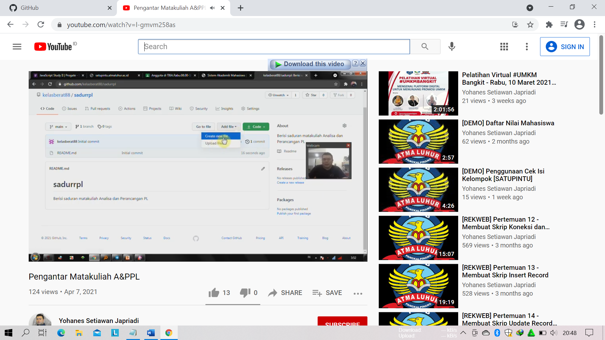

NAMA : RISMALINA
NIM : 1811500059
KELOMPOK : TI6A
Hasil saya menyadur :
Pada pertemuan 1, membahas tentang :
1. Belajar beretika ketika berkomunikasi dengan Dosen.
2. Tindak mencegah penularan covid dengan tetap mematuhi 5M. ( memakai masker, mencuci tangan, menjaga jarak, menjauhi kerumunan dan membatasi mobilitas ).
3. Kegiatan Perkuliahan pada Mata Kuliah Analisis dan Perancangan RPL melalui Classroom, Youtube, dan Telegram.
4. Penilaian Akhir Pada mata Kuliah Analisis Perancangan RPL yaitu dari Nilai Tugas, Absensi, UTS dan UAS.
5. Cara absensi kehadiran yaitu, dengan membuat saduran pada setiap pertemuan dan ditaruh ke akun github.
6. Penjelasan penentuan Grade/ Nilai akhir.
7. Penjelasan mengenai mata kuliah Analisis dan Perancangan Perangkat lunak.
8. Tujuan mata Kuliah Analisis dan Perancangan RPL untuk menerapkan UML pada persiapan mengahadapi KP.
9. Membuat kelompok presentasi sebanyak 3 orang 1 kelompok.
10. Penggunaan Sofware pada mata kuliah ini adalah Astah Community 6.
